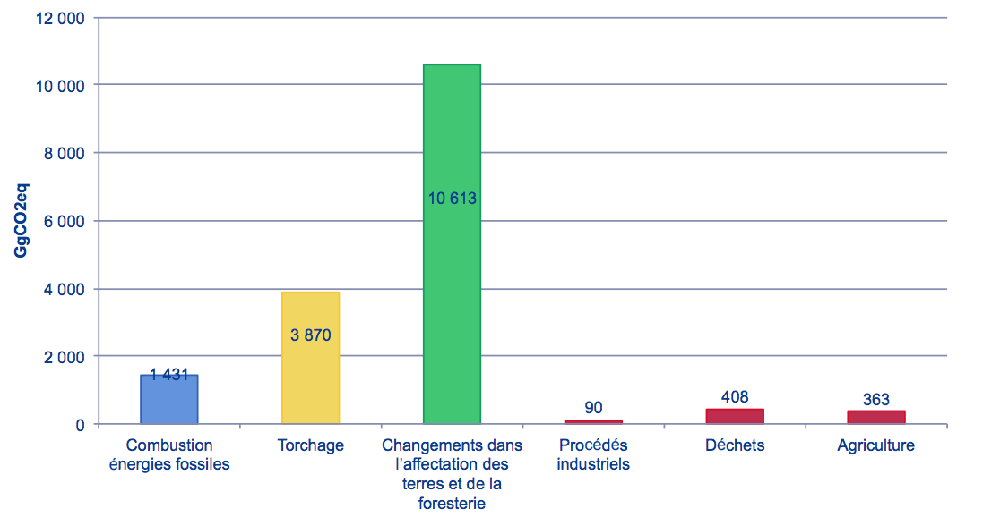
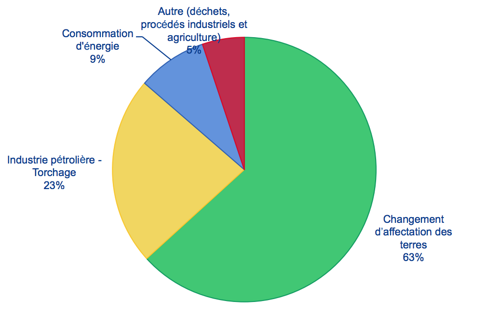
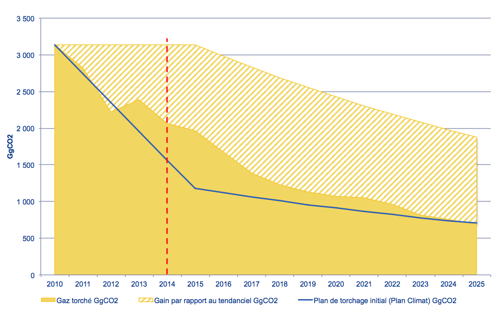
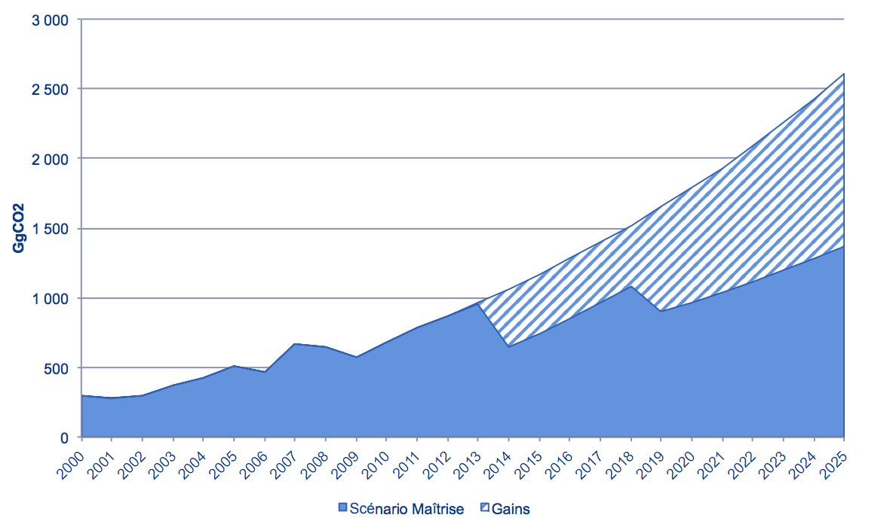
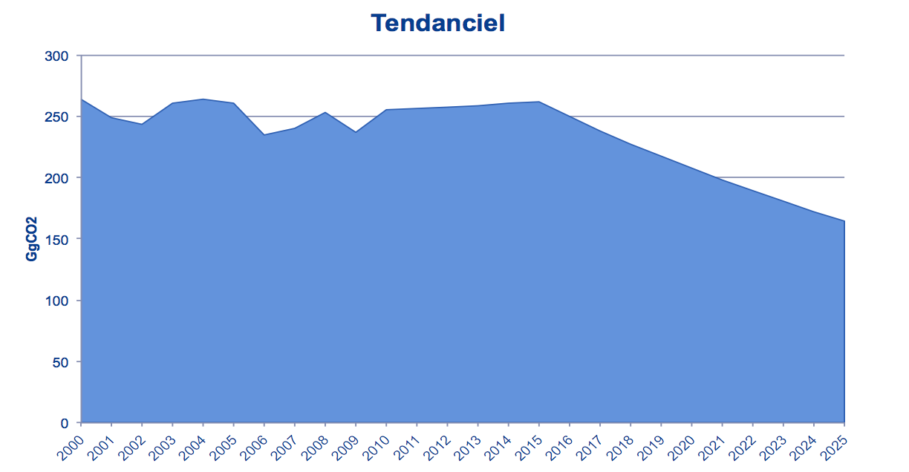
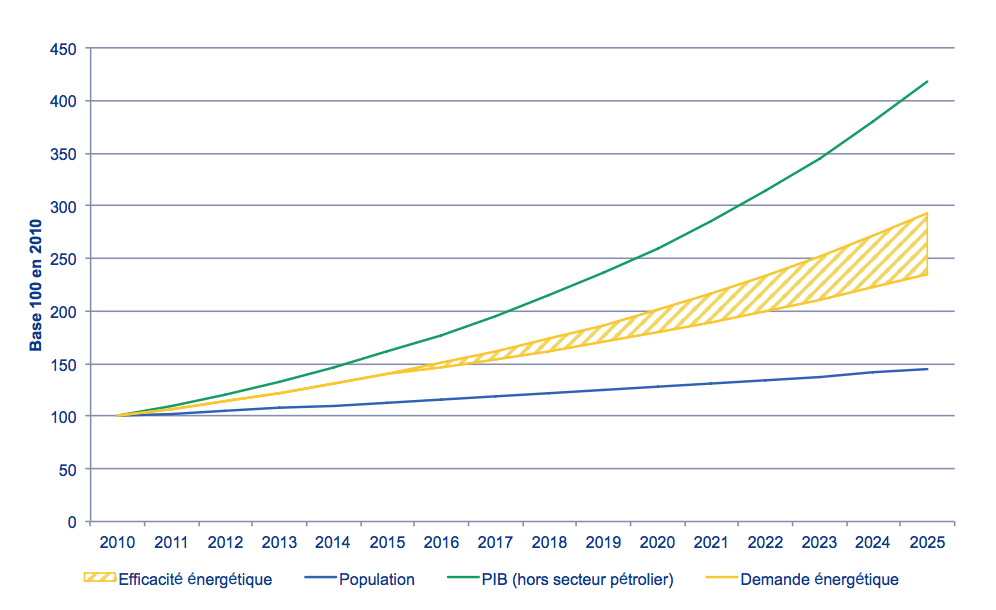
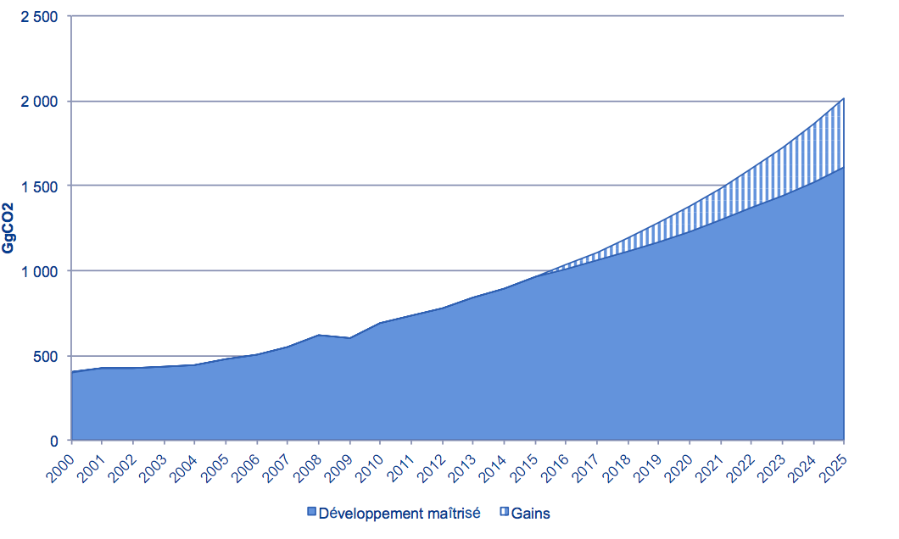
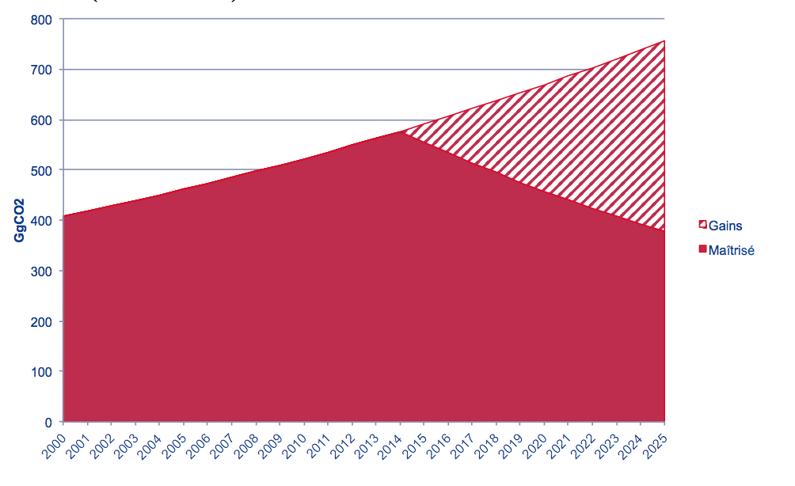

31 mars 2015
Conformément aux décisions 1/CP.19 et 1/CP.20 et à son plan stratégique de développement le Gabon communique, à travers ce document, sa contribution définie au niveau national (INDC) pour lutter contre les changements climatiques et l’ensemble des informations relatives.
Les éléments repris dans la Contribution Nationale du Gabon sont la synthèse des ambitions et des politiques publiques du Gabon qui, au moment d’opérer un tournant dans son développement, fait le choix de s’engager résolument dans un développement durable, basé notamment sur des émissions de GES maîtrisées.
Cette soumission revêt un caractère doublement important pour le Gabon, en raison d’une part, de l’engagement du Président de la République à mener une politique de développement durable et d’autre part, pour contribuer à l’effort mondial de réduction de la hausse de la température.
| Type d'engagement | Réduction par rapport à un scénario de développement non maîtrisé |
| Périmètre | Ensemble des émissions de GES hors stockage de carbone dans la biomasse forestière |
| GES | CO2, CH4, N2O |
| (HFC, PFC, SF6 et NF3 seront couverts ultérieurement) | |
| Année de référence | 2000 |
| Période | 2010-2025 (période du Plan Stratégique Gabon Emergent) |
| Ces analyses seront prolongées sur 2030, voire 2050 dans le cadre des études complémentaires qui seront menées avant la COP21 | |
| Niveau de réduction | Au moins 50% de réduction des émissions par rapport au scénario de développement non maîtrisé en 2025 |
| Crédits carbone | Pas de réduction à partir d'achats de crédits carbone hors Gabon |
Cumulés, les engagements du Gabon doivent permettre de réduire les émissions de GES de plus de 1 500 000 GgCO2 sur 2010-2025, soit 65% par rapport au scénario tendanciel.
En 2025, les gains représentent de l’ordre de 62% par rapport au scénario tendanciel.

Cette soumission sera enrichie d’ici à la Conférence pour le Climat d’annexes détaillant plus précisément les scénarios et les mesures prévues par le Gabon pour suivre et tenir ses engagements.
Couvert à 88% par la forêt, le Gabon, comme de nombreux pays forestiers, joue un rôle de « puits » de carbone en absorbant plus de 4 fois plus de CO2 que ce qu’il émet.

Source: 2ème Communication Nationale
Les nombreuses mesures déjà prises par le Gabon (Code forestier en 2001, création de 13 parcs nationaux couvrant près de 11% du territoire en 2002, etc.) concourent toutes à pérenniser le rôle joué par la forêt gabonaise dans le stockage de carbone.
Hors stockage de carbone dans la biomasse, le profil GES du Gabon est le suivant :

Source: 2ème Communication Nationale
Le Gabon ne souhaite pas limiter sa politique Climat à la simple conservation de forêts, à l’aide de mécanismes de financement internationaux. Cette logique de rente obérerait sont développement économique et social en l’asservissant à des mécanismes extérieurs, sans lien avec l’économie réelle.
C’est pourquoi les engagements pris par le Gabon portent exclusivement sur ses émissions de GES hors stockage de carbone par la biomasse.
Sur ce périmètre restreint, les émissions du Gabon se répartissent de la manière suivante :

Source: 2ème Communication Nationale
Pays en développement et en croissance démographique, le Gabon ne peut s’engager sur une réduction en valeur absolue de ses émissions de GES, mais bien sur une maîtrise de celles-ci dans le cadre de son développement.
Les sous-jacents pris en compte sont :
Deux scénarios d’émissions de GES ont donc été élaborés :
Avec plus de 60% des émissions directes, l’occupation du sol et son corollaire, le changement d’affectation des sols, jouent un rôle crucial dans l’atteinte des ambitieux objectifs de réduction des émissions de GES que le Gabon s’est fixé.
Les principales hypothèses qui sous-tendent le scénario de développement non maîtrisé (ou tendanciel) sont :
Par rapport à cette évolution, le scénario de développement maîtrisé repose sur :

En prenant en compte les émissions liées à l’exploitation forestière (qui n’étaient pas incluses dans l’inventaire national des émissions de GES), ces différentes mesures permettront de réduire les émissions de GES de plus de 1 500 000 GgCO2 sur 2010-2025, soit 68% par rapport au scénario tendanciel (63% en 2025).
Représentant 23% des émissions directes en 2000, les émissions liées au torchage du gaz associé dans la production pétrolière ont fait l’objet de plusieurs mesures.
Ces mesures sont entre autre, l’adhésion en 2007 à l’initiative « Global Gas Flaring Reduction » (GGFR) de la Banque Mondiale, la promulgation en 2014 de la loi N° 011/2014 portant règlementation du secteur des hydrocarbures en République Gabonaise interdisant le torchage en continu au Gabon et ce, cadrant avec la participation du Gabon dès cette année à l’initiative « Zéro Torchage de Routine d’ici 2030 » lancée par le GGFR.
Ces mesures ont déjà un impact très significatif sur les émissions de GES.

Sur la période 2010-2025, cette politique volontariste permettra de réduire les émissions de GES de 17 341 GgCO2, soit 41% des émissions (63% en 2025).
Les principaux moyens de mise en œuvre de ce plan de réduction au Gabon que sont la réinjection et la production d’électricité impliquent des investissements particulièrement en unité de compression. Cet investissement entre dans le cadre des « coûts pétroliers » c’est-à-dire des dépenses supportées par les opérateurs auxquelles le Gabon reconnait un droit de récupération sur la zone d’exploitation tel qu’indiqué dans le code des hydrocarbures gabonais. Ceci équivaut donc à un remboursement de l’ensemble de ces coûts aux opérateurs par le Gabon.
Les émissions liées à la combustion locale d’énergies fossiles représentent le 3ème poste d’émissions.

La maîtrise des émissions de GES liées à la production et à la consommation d’électricité dépend principalement de deux types de mesures :
Une analyse historique sur la période 2000-2010 montre que l’efficacité énergétique de l’économie gabonaise s’est améliorée en moyenne de 3,8% par an.
Le Gabon souhaite poursuivre sur cette lancée et continuer à améliorer l’efficacité énergétique sur cette base, avec une cible d’environ 4 000 GWh consommés à horizon 2025.

Sur cette base, le Gabon a développé un plan ambitieux de développement de l’hydroélectricité, avec comme objectif d’assurer à horizon 2025 une fourniture de l’électricité basée à 80% sur l’hydroélectricité et 20% sur le gaz.

Sur cette base, ce plan permettra de réduire les émissions de GES de 9 000 GgCO2 sur 2010-2025, soit 31% par rapport au scénario tendanciel (48% en 2025).

Ces capacités de production permettront également d’exporter de l’ordre de 5 000 GWh sur la période 2010-2025.
Enfin, le Gabon développe également un plan d’électrification solaire des villages isolés. Ce plan permettra d’améliorer l’accès à l’énergie des zones rurales sans recours aux énergies fossiles.
Les émissions de GES des industries énergétiques hors électricité sont dues à l’industrie pétrolière. Ces émissions suivent donc la courbe de la production pétrolière, comme le montre le graphique suivant.
Tendanciel

Compte-tenu des faibles enjeux relatifs, le Gabon n’a pas d’engagement de réduction sur ce secteur.
Les émissions dues au transport ne représentent en 2000 que 2,4% des émissions (mais 20% des émissions énergétiques). Si ce secteur n’a pas encore fait l’objet d’étude macroscopique complète, de nombreux projets sont prévus, qu’il s’agisse de projets d’infrastructures (avec de nombreuses routes planifiées), de développements de services de transport en commun (notamment à Libreville, pour lutter contre la congestion) ou des évolutions de la législation (par exemple l’interdiction de l’importation de véhicules de plus de 3 ans).
En l’absence de données complémentaires, le Gabon prend l’engagement de maîtriser la hausse des consommations d’énergie liées au transport à 80% du scénario tendanciel en 2025.

Sur cette base, ce plan permettra de réduire les émissions de GES de près de 2 000 GgCO2 sur 20152025, soit 8% par rapport au scénario tendanciel (20% en 2025).

Cette section reprend les consommations d’énergie (hors électricité) de l’industrie (hors industrie pétrolière), des commerces et institutions (notamment l’administration), des ménages, de l’agriculture, de la pêche et de l’exploitation forestière.
Là encore, aucune étude macroscopique n’est disponible mais suivant la philosophie générale de son développement, le Gabon s’engage à contenir la croissance de ces émissions.
Dans le scénario de développement non maîtrisé, l’évolution des émissions de GES suit l’évolution du PIB, alors que dans le scénario de développement maîtrisé, l’intensité carbone du PIB diminue de 2% par an.
Sur cette base, cet engagement doit permettre de réduire les émissions de GES de 3 500 GgCO2 sur 2015-2025, soit 8% par rapport au scénario tendanciel (18% en 2025).
Les émissions liées aux déchets, aux procédés industriels (cimenterie) et à l’agriculture représentent le 4ème poste d’émissions.

Le Gabon s’engage à réduire de moitié les émissions de GES liées au traitement des déchets et eaux usées à horizon 2025. Compte-tenu de l’évolution attendue de la population, cet engagement doit permettre de réduire les émissions de GES de plus de 2 000 GgCO2 sur 2015-2025, soit 16% par rapport au scénario tendanciel (50% en 2025).

2. Procédés industriels (cimenterie) et agriculture
En l’absence de précisions, ces secteurs sont exclus de la présente contribution.
La vision du Gabon en matière d’adaptation repose sur l’intégration de cette composante dans un schéma d’investissement cohérent basé sur la stratégie de développement du pays, plutôt que sur des aides ou subventions ponctuelles isolées sans lien avec ladite stratégie.
A cet effet, le Gabon s’est doté notamment d’une Stratégie Nationale d’Adaptation du littoral face aux effets des changements climatiques. Celle-ci se décline au travers de mesures visant à une gestion intégrée de la zone côtière par la mise en place d’un cadre juridique approprié, l’acquisition d’outils de surveillance et enfin la formation et l’information.
Par ailleurs, les orientations générales de cette stratégie préconisent la réalisation d’un schéma d’aménagement du milieu urbain côtier, la promotion des activités génératrices de revenus liés aux écosystèmes marins et côtiers. A cela, il faut ajouter un dispositif comprenant des projets de conservations des mangroves pour la protection du littoral, la protection des espèces, la mise en place d’installations spécifiques pour la réception et la gestion des déchets, le suivi de la nidification des tortues marines et la création d’un observatoire du littoral et de l’environnement marin.
Les villes de Libreville et Port-Gentil, particulièrement exposées, font l’objet de mesures de protection sur le littoral par des barrières physiques et des travaux de réhabilitation des berges. La zone économique de l’ile Mandji bénéficie, quant à elle, d’un surélèvement.
Cette stratégie consacre l’engagement du Gabon à agir contre les changements climatiques en prenant en compte l’adaptation de son territoire aux effets de ceux-ci.
Comme indiqué au paragraphe B « Philosophie des engagements du Gabon », le pays a engagé à la fois des mesures ou réglementation sectorielles (code forestier, création des parcs nationaux, plan national de réduction du torchage, interdiction d’exportation des grumes, etc.) comme une réglementation encadrant le fonctionnement général de l’économie, en application de la Loi portant Orientation du Développement Durable.
Dans tous les cas ces mesures et réglementations ont un impact direct ou indirect sur les émissions de GHG, ainsi que sur d’autres variables du Développement Durable, telles que la biodiversité, les écosystèmes et le capital social et communautaire. En particulier, l’application du mécanisme de marché induit par la Loi portant Orientation du Développement Durable exerce un effet incitatif, comportemental et financier, sur la réduction des émissions de GHG de manière globale sur toutes les activités du pays.
Des études ultérieures permettront de quantifier la réduction des émissions escomptées.
La Loi portant orientation du Développement Durable prévoit la mise en place d’un Fonds National de
Développement Durable. La création de ce fonds est à l’étude et se positionnera dans la lignée des Fonds Nationaux Climat qui se développent dans divers pays, en tenant compte des particularités de la stratégie gabonaise. Le Fonds permettra de canaliser et stimuler une partie des flux financiers dédiés à la réduction des émissions et plus largement au Développement Durable : (1) budget de l’Etat, (2) investissements privés, (3) revenus des crédits du marché domestique, (4) apports ou prêts de bailleurs de fonds).
En attendant, les diverses dispositions sectorielles ou réglementations présentées dans ce document sont accompagnées d’une stratégie de financement adaptée à chaque cas ou secteur, qui peut être déclinée sous 4 modalités complémentaires :
Le Loi portant orientation du développement durable au Gabon instaure un mécanisme vertueux par lequel les activités qui se développent doivent effectuer au préalable un bilan de leurs impacts (l’Etude d’Impact Développement Durable), mener un Plan de Gestion afin de les maîtriser et les réduire, et compenser les effets négatifs incompressibles. Le mécanisme s’inscrit donc dans la logique « mesurer, réduire, compenser », qui sert également de ligne directrice à de nombreuses initiatives internationales de marchés carbone.
Le Gabon s’est enregistré en janvier 2015 auprès du Green Climate Fund et prétend opérationnaliser la relation dans les plus brefs délais, afin de montrer des résultats dans le domaine de la réduction des émissions mais aussi de l’adaptation à la CoP 21.
En effet, la stratégie climat du Gabon est propre au pays et en même temps construite en cohérence avec les tendances internationales, les avancées méthodologiques et les orientations des négociations climatiques et biodiversité. Dans ce cadre, le Gabon prend en charge ses propres choix et recherche en parallèle à établir des partenariats avec des programmes en accord avec la stratégie présentée dans ce document.
Les différents champs d’action à financer en matière de réduction des émissions, en accompagnement des dispositions stratégiques présentées dans cette contribution nationale sont en particulier des projets :
Les développements en matière de financement seront spécifiés dans les Annexes.
La rédaction de la contribution du Gabon s’est basée sur un ensemble de documents stratégiques dont le Plan Stratégique Gabon Emergent, le Plan National Climat, les plans opérationnels sectoriels et les textes règlementaires en vigueur.
Par ailleurs, le processus mis en place pour cette rédaction a fait intervenir directement les acteurs publics et privés en charge de la mise en œuvre des politiques publiques ou de leur stricte application.
| SECTEURS | ACTEURS IMPLIQUES DOCUMENTS DE REFERENCE | DOCUMENTS DE REFERENCE |
|---|---|---|
| Energie – Electricité |
|
|
| Hydrocarbures |
|
|
| Agriculture |
|
|
| Forêt |
|
|
| Infrastructures |
|
|